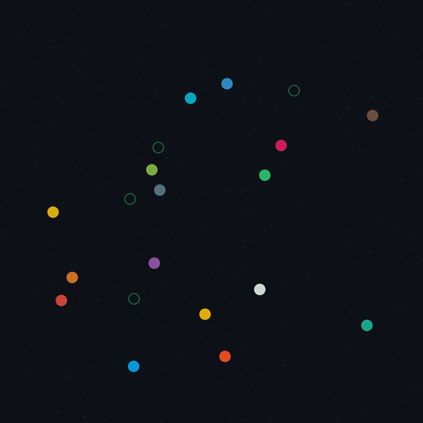

Teaching AI agents to dominate an agar.io clone through deep reinforcement learning. Built from scratch in Python and PyTorch — game engine, RL environment, policy architecture, training loop, and evaluation harness.
The Problem
Agar.io is a surprisingly rich environment for RL research. At any moment an agent must:
- Navigate a continuous 2D space toward food while avoiding larger enemies
- Decide when to split — doubling mobility at the cost of becoming individually smaller and harder to control
- Reason about mass ratios — you can only eat entities smaller than 1/1.21 of your own mass, and be eaten by anything bigger
- Manage multiple bodies — a split player controls up to 16 simultaneous cells, each moving toward the same cursor target but following independent physics
This creates a non-trivial partial-observability problem: the world is large, entities are numerous, and the optimal action depends on continuous mass comparisons across a variable-size entity set.
Game Engine
The first challenge was building a simulation fast enough for RL training. A naive Python implementation of agar.io — looping over entities in Python, checking collisions one-by-one — runs at roughly 50 ticks/sec. That's playable, but training PPO to 10M steps would take weeks.
The solution is to represent every entity type as a contiguous NumPy array and express all game logic as vectorised operations over those arrays.
Entity model
CellArrays: pos[N,2] mass[N] vel[N,2] split_vel[N,2] owner[N] alive[N]
FoodArrays: pos[F,2] (compact layout — no gaps, swap-with-last on free)
VirusArrays: pos[V,2] mass[V]
EjectedArrays: pos[E,2] vel[E,2] owner[E] settle_timer[E]Dead slots are recycled through a free-list deque. Allocation and deallocation only happen at discrete events (splits, deaths, spawns) — never in the hot collision path, which reads and writes only the pos[0:n_alive] slice.
Collision detection
Eating uses O(n²) NumPy broadcasting over the alive-cell subset:
# Both conditions must hold simultaneously:
# 1. mass_A > 1.21 × mass_B (eat_ratio² avoids two sqrt calls per pair)
# 2. distance(center_A, center_B) < radius_AThe 1.21× threshold comes from squaring the 1.1× radius ratio, which avoids computing sqrt(mass) for every pair — a meaningful saving when cells number in the hundreds.
For mass accumulation after eating, np.add.at handles the case where one predator eats multiple prey in the same tick. It's slower than += but correct when indices repeat.
Physics
Speed scales inversely with mass: base_speed / mass^0.439. This means small cells are fast and nimble; large cells are slow and vulnerable. At start mass 2500, a cell moves ~26 units per tick (at 25 TPS). The formula is applied elementwise across all alive cells in one vectorised call.
Split momentum lives in a separate split_vel array, which decays by a multiplier each tick. The position update sums both:
cell_pos += (cell_vel + cell_split_vel) * dt
cell_split_vel *= split_decayThis keeps the steering velocity (cell_vel) clean — it's overwritten every tick from the action input — while preserving split momentum across ticks.
Throughput
| Scenario | TPS |
|---|---|
| 2 players / 500 food | ~4 300 |
| 4 players / 1 000 food | ~4 000 |
| 8 players / 2 000 food | ~3 500 |
Single-world throughput is bottlenecked by Python dispatch overhead (~3 µs × ~25 NumPy calls/tick = ~75 µs floor), not computation. The 10k agent-steps/sec training target is reached by running 3 independent worlds in parallel via VecAgarEnv.
RL Environment
The game engine exposes world.step(actions) → (rewards, dones, info) and world.get_state() as separate calls. Keeping state serialisation out of the tick loop saves ~15% of tick time in training.
Observation design
The core challenge is encoding a variable-size entity set into a fixed-size vector for the neural network. The solution: ego-centric K-nearest-neighbour groups.
From the agent's centroid, we collect:
| Group | K | Features per entity |
|---|---|---|
| Own cells | 16 | (rel_x, rel_y, log_mass_norm) |
| Food | 20 | (rel_x, rel_y) |
| Viruses | 10 | (rel_x, rel_y) |
| Threat enemies | 10 | (rel_x, rel_y, delta_log_mass) |
| Prey enemies | 10 | (rel_x, rel_y, delta_log_mass) |
Total: 170 float32 features.
The threat/prey split is deliberate. Enemy cells are classified at observation-build time — threats (larger than self) get delta_log_mass > 0, prey (smaller) get delta_log_mass <= 0. This means the network never needs to learn a subtraction to distinguish them; the sign of the mass feature carries that information directly.
All positions are divided by max(width, height) / 2 and clipped to [-10, 10]. Log-mass features use log(mass / start_mass + 1e-6) / 5.
Action space
Continuous: Box([-1,-1,-1,-1], [1,1,1,1]). The first two dimensions encode a movement direction, projected to a world-space cursor position as target = centroid + direction × large_scale. Split and eject are thresholded at 0 — a positive logit fires the action.
The pre-tanh sample z is stored in the rollout buffer rather than the squashed action tanh(z). This ensures the Jacobian correction in the log-probability calculation is exact, and avoids numerical issues from inverting tanh near ±1.
Reward function
reward = Δ(own_mass) / start_mass
+ survival_bonus per tick (0.01)
- player_mass / reward_scale on deathThe death penalty scales with current mass so that dying is always a net loss regardless of how large the agent has grown. Without this, an agent that grew very large could benefit from dying (resetting to start mass and collecting food again). The survival bonus at 0.01 equals food_mass / start_mass — roughly one food pellet per tick in value.
Policy Architecture
Baseline: MLP
A flat 3-layer MLP (256 → 128) over the 170-dim observation. Shared encoder, separate actor mean head, shared log_std parameter and critic head. Orthogonal initialisation throughout (gain √2; output heads: 0.01 for actor, 1.0 for critic — standard PPO practice).
Primary: attention policy
The MLP treats all 170 features as a flat vector, losing the natural entity structure. The attention policy exploits it.
Each entity group is projected to a common embed_dim=64 with a learned type embedding added:
own_emb = own_proj(own_tokens) + type_emb[0] # (B, 16, 64)
food_emb = food_proj(food_tokens) + type_emb[1] # (B, 20, 64)
...
tokens = cat([own_emb, food_emb, virus_emb, threat_emb, prey_emb], dim=1) # (B, 66, 64)A 2-layer Pre-LN TransformerEncoder (4 heads) then attends over all 66 entity slots. Pre-LayerNorm (norm_first=True) gives more stable training than post-LN.
Zero-padded slots (fewer than K entities present) are masked in the attention computation. The output is mean-pooled over real tokens only:
n_real = is_real.float().sum(-1, keepdim=True).clamp(min=1.0)
pooled = (out * is_real.unsqueeze(-1).float()).sum(1) / n_realThe two global scalar features (log total mass, cell count fraction) are concatenated to the pooled representation before the actor and critic heads.
Attention visualisation
AttentionPolicy.attention_maps(obs) manually steps through each transformer layer, calling MultiheadAttention with need_weights=True, average_attn_weights=False to extract per-head weights. This is displayed as a glow overlay in the live renderer — entities that receive high attention get a halo sized proportionally to their attention weight.
python main.py --checkpoint ckpt.pt --attention-vizThe inference runs once per simulation tick (25 Hz) and is cached; the renderer reads it at 60 Hz. This keeps expensive network inference out of the render path.
Recurrent option
RecurrentPolicy wraps an MLP encoder with a GRU hidden state, threading (hidden_state_in, hidden_state_out) through each act() call. Useful for partial-observability experiments where entity history matters.
Training
PPO
Standard clipped surrogate objective with GAE:
L = L_clip + c_v · L_value - c_e · L_entropy
L_clip = E[min(r·A, clip(r, 1±ε)·A)]Advantages are computed with GAE (λ=0.95) and normalised per rollout. The rollout buffer is pre-allocated (T × N tensors) — no per-step allocation in the collect loop.
Key hyperparameters:
| Rollout length | 512 steps/env |
|---|---|
| Parallel envs | 4 |
| Minibatch size | 256 |
| Epochs per rollout | 4 |
| Clip range ε | 0.2 |
| Entropy bonus | 0.01 |
| Learning rate | 3e-4 |
| Total steps | 10M |
Self-play curriculum
Standard PPO against random bots hits a ceiling quickly — the agent learns to eat food and avoid naive opponents, but never develops the split-timing and positional play needed against skilled opposition.
The solution is OpponentPool: a ring buffer of past policy snapshots. Every 50 rollouts, the current policy is saved to the pool (max 20 snapshots). During rollout collection, ~80% of episodes use a randomly sampled past snapshot as the bot opponent; 20% use random walk to preserve diversity.
selfplay:
pool_size: 20
update_interval: 50 # rollouts between snapshots
selfplay_prob: 0.8Policies are lazily loaded on first use and replaced when their ring slot is overwritten (GC collects the old instance). Bot opponents are hot-swapped between rollouts via VecAgarEnv.set_bot_policy() without reconstructing environments.
The pool starts empty — opponents are random-walk bots until rollout 50. This bootstraps basic competence before self-play begins.
Training Progression

Evaluation
Baselines
| Policy | Behaviour |
|---|---|
RandomPolicy | Uniform random actions each tick |
GreedyPolicy | Chase nearest edible enemy or food; flee nearest threat |
Elo tournament
To measure progress across training, eval/elo.py runs a round-robin tournament across checkpoint history. Each unordered pair (A, B) plays episodes_per_pair games in both directions (A as eval agent against B as bot, and vice versa) to cancel map-position advantage.
Win/loss/draw is determined by final mass rank. Elo updates use the standard formula:
E_A = 1 / (1 + 10^((R_B − R_A) / 400))
R_A' = R_A + K · (score_A − E_A)Policies are loaded pair-by-pair and freed immediately after their games — the full checkpoint history never needs to be in memory simultaneously.
Replay & visualisation
Episodes can be saved to disk as ReplayEpisode objects (trajectory arrays) and replayed in the Pygame renderer at arbitrary speed. A mass-over-time plot is also available per episode via matplotlib.
Test Coverage
| Module | Tests |
|---|---|
| Game mechanics | 34 |
| RL environment | 23 |
| Agent / policy | 24 |
| Training loop | 12 |
| Evaluation harness | 34 |
Tests cover eating rules, split physics, merge timer, boundary clamping, mass conservation, no-NaN guarantees, environment determinism, and PPO convergence on a small synthetic problem.
Stack
Python 3.12 · PyTorch 2.x · NumPy · Gymnasium · PettingZoo · Pygame-CE · TensorBoard · Ruff